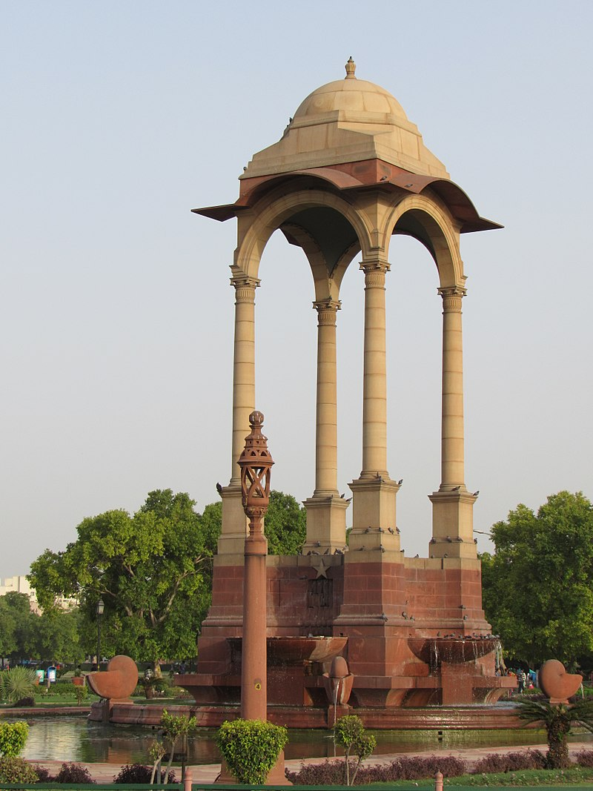
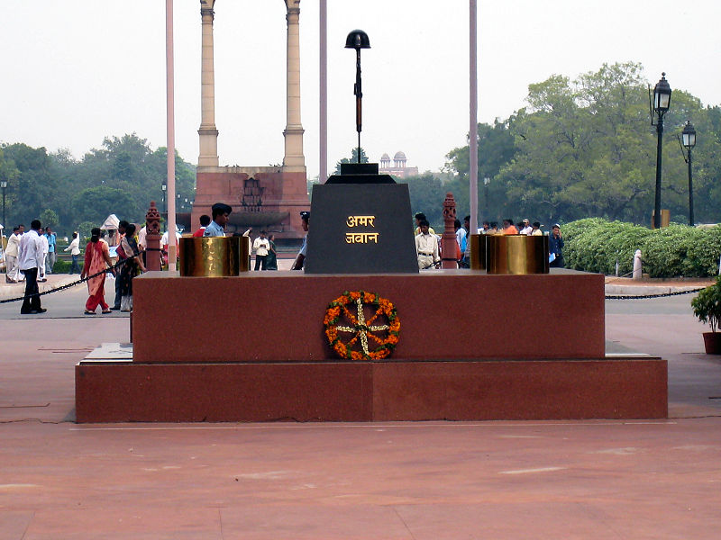
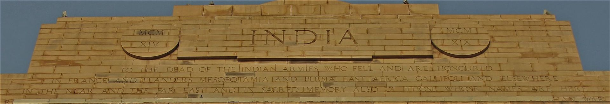

India Gate : Vicinity
Canopy
About 150 metres east of the gate, at a junction of six roads, is a 73-foot cupola, inspired by a sixth-century
pavilion from Mahabalipuram. Lutyens used four Delhi Order columns to support the domed canopy and its
chhajja. The canopy was
constructed in 1936 as part of a tribute to the recently deceased Emperor of India King George V, and covered a
70-foot-tall (21.34 m) marble statue by Charles Sargeant Jagger of George V in his coronation robes and Imperial
State Crown,

bearing the British globus cruciger and sceptre. From 1936 until its removal in 1968, this statue stood on a
pedestal bearing the Royal Coat of Arms and the inscription GEORGE V R I, the "R I" designating him as 'Rex
Imperator' or 'King
Emperor'.
The canopy was originally topped by a gilded Tudor Crown and bore the Royal Cyphers of George V. These
were removed on 12 August 1958.
The statue remained standing at its original location for two decades following India's independence in 1947,
but increasingly became a target of opposition from some Indian politicians, particularly after the tenth
anniversary of
Independence and the centennial of the Indian Rebellion of 1857. Two days before Independence Day in 1965,
members of the Samyukta Socialist Party overpowered two constables guarding the site, covered the statue in tar
and defaced its
imperial crown, nose and one ear.
The Indian
government decided to relocate the statue but faced considerable criticism for taking this stance. The British
government rejected a
proposal to repatriate the monument to the United Kingdom, citing the lack of an appropriate site and sufficient
funds, while the British High Commission in New Delhi declined to have the statue relocated to their compound,
due to limited
space. Efforts to move the statue to a Delhi park were strongly opposed by the nationalist Bharatiya Jana Sangh,
which then held power in the city. Finally, in late 1968, the statue was removed from its position beneath the
canopy and
briefly placed in storage before being moved to Delhi's Coronation Park, where it joined other British Raj-era
statues.
Amar Jawan Jyoti

Amar Jawan Jyoti, or the flame of the immortal soldier, is a structure consisting of black marble plinth, with
reversed L1A1 Self-loading rifle, capped by war helmet, bound by four urns, each with the permanent light
(jyoti)
from compressed
natural gas flames. It is erected under the India gate to commemorate Indian soldiers martyred in the war of the
liberation of Bangladesh in December 1971. It was inaugurated by the then Prime Minister Indira Gandhi on 26
January 1972, the
twenty-third Indian Republic Day.
Since the installation of the Amar Jawan Jyoti, it has served as India's tomb of
the unknown soldier. It is manned round the clock by the Indian armed forces.
Wreaths are placed at the Amar Jawan Jyoti every Republic Day, Vijay Diwas, and Infantry Day by the
Prime Minister
and the Chiefs of the Armed Forces. Infantry Day is the day Indian infantry air landed at Srinagar on 27 October
1947 to stop
and defeat the Pakistani mercenaries' attack on Jammu and Kashmir. The sixty-eighth Infantry Day was marked by
wreath laying ceremony by Chief of Army Staff, General Dalbir Singh, and by Lt. General Chandra Shekhar (Retd.)
on
behalf of
infantry veterans.
Inscriptions
The cornice of the India Gate is inscribed with the Imperial suns while both sides of the arch have INDIA, flanked by the dates MCMXIV ('1914'; on the left) and MCMXIX ('1919'; on the right). Below the word INDIA, in capital letters, is inscribed:
TO THE DEAD OF THE INDIAN ARMIES WHO FELL AND ARE HONOURED IN FRANCE AND FLANDERS MESOPOTAMIA AND PERSIA EAST AFRICA GALLIPOLI AND ELSEWHERE IN THE NEAR AND THE FAR-EAST AND IN SACRED MEMORY ALSO OF THOSE WHOSE NAMES ARE HERE RECORDED AND WHO FELL IN INDIA OR THE NORTH-WEST FRONTIER AND DURING THE THIRD AFGHAN WAR.
13,218 war dead are commemorated by their names on the gate. Due to security reasons access to read the names on the memorial is restricted, though they can be seen on the Delhi Memorial (India Gate website, which lists the names with their respective date of death, unit name, regiment, place on gate where name is inscribed, location, and other information). The names on the gate include that of a female staff nurse from the territorial force, killed in action in 1917.